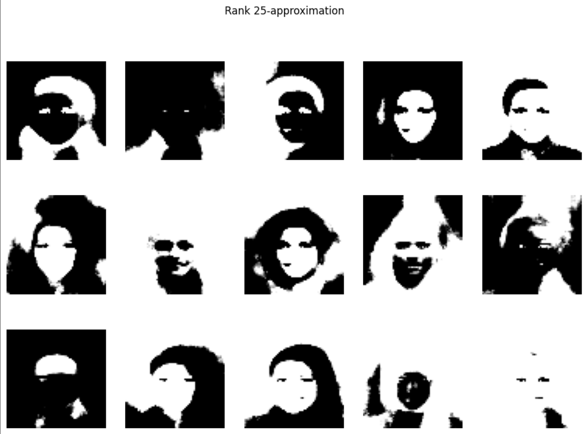
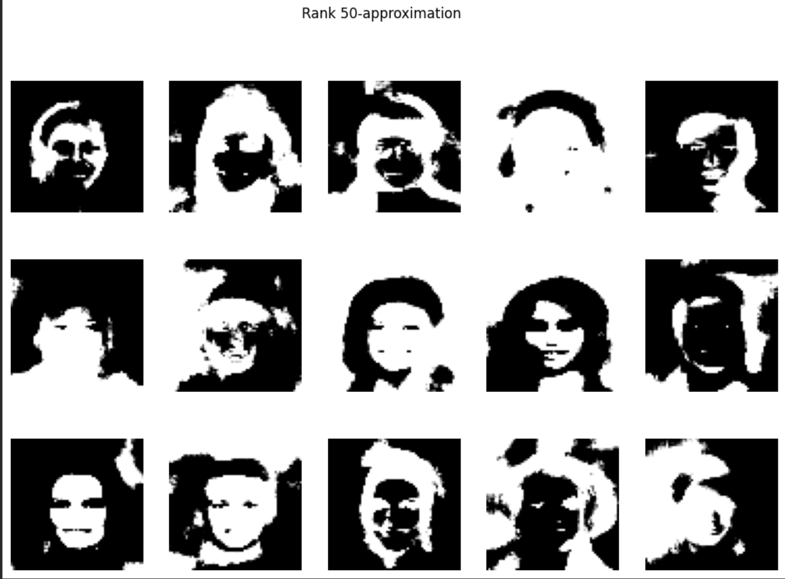
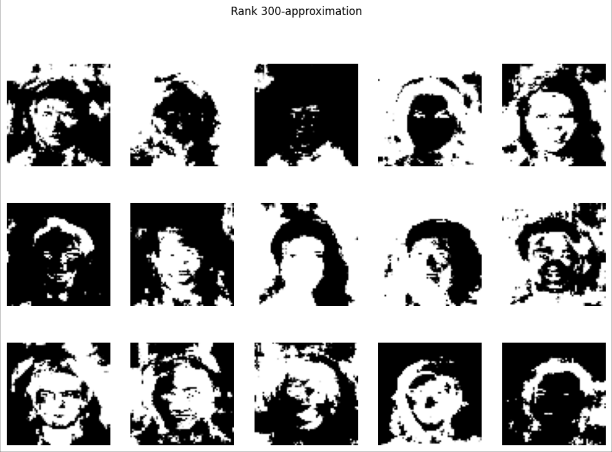

Introduction
Eigenfaces are a cool application of SVD, and in this article, we'll take a look into how we can generate some interesting pictures using a large dataset.
SVD
SVD (Singular Value Decomposition)
According to Wikipedia, SVD "is a factorization of a real or complex matrix into a rotation,
followed by a rescaling followed by another rotation.
It generalizes the eigendecomposition of a square normal matrix with an orthonormal eigenbasis to any m × n matrix."
But what does this mean?
Let's say we have a matrix $M \in \mathbb{R}^{m \times n}$. We can represent this given matrix as $M = U \Sigma V^T$,
where the orthogonal matracies $U \in \mathbb{R}^{m\times m}$, and $V \in \mathbb{R}^{n \times n}$.
$\Sigma \in \mathbb{R}^{m \times n}$, such that $\Sigma$ is a diagonal matrix containing values of $\sigma_1 \geq \dotsb \geq \sigma_r > 0$.
Visually, $\Sigma$ looks something like this, where the empty spots will be just zeros:
$$
\Sigma =
\begin{pmatrix}
\sigma_1 & & & & & \\
& \sigma_2 & & & & \\
& & \ddots & & & \\
& & & \sigma_r & & \\
& & & & \ddots & \\
& & & & & 0
\end{pmatrix}_{m \times n}
$$
This still doesn't tell us much.
In an intuitive way, let's think about each component individually:
- $V^T$: Convert the input space (images we can see) into some unknown $\Sigma$'s sapce
- $\Sigma$: How much to stretch the given feature by
- $U$: Converts $\Sigma$'s space back to the output space (back to images we can see)
The fun thing is, it can be done for any real matrix $M$!
If we use the definition that we stated, we know that as we iterate through values of $\sigma_i$, they decrease. This means that the most important features will be on the upper values of $\sigma_i$.
Coding
Loading the Data
Okay, let's try and apply this.
The first thing we'll do is load the dataset, and turn it into something we can perform matrix operations on.
This is just some boilerplating, so feel free to copy it.
import kagglehub
import numpy as np
import os
import cv2
import matplotlib.pyplot as plt
path = kagglehub.dataset_download("jessicali9530/celeba-dataset")
def load_images(image_directory, count=1000, img_size=(64, 64)):
flattened_images = []
processed_count = 0
full_image_path = os.path.join(image_directory, 'img_align_celeba')
for root, _, files in os.walk(full_image_path):
for file in files:
if processed_count >= count:
break
if file.endswith(('.jpg', '.png', '.jpeg')):
filepath = os.path.join(root, file)
img = cv2.imread(filepath, cv2.IMREAD_GRAYSCALE)
if img is not None:
img_resized = cv2.resize(img, img_size, interpolation=cv2.INTER_CUBIC)
flattened_images.append(img_resized.flatten())
processed_count += 1
return np.array(flattened_images)
Here, this function returns a matrix where each row is a compressed grayscale image. Keeping it flat and grayscale allows us to conform the images into something we can process through SVD. We will keep the images as 64 by 64 images so we don't spend too much processing power trying to compute these images.
SVD
Thankfully, Numpy provides us with an SVD function to handle most of the heavy lifting. We subtract the mean face to remove any uniform information (say the background), and just keep track of values that vary from face to face.
images = load_images(path, count=1_000)
X = images - mean_faces
U, s, Vt = np.linalg.svd(X)
# U: (1000, 1000), s: (1000,), Vt: (4096, 4096)
 Why do some rows generate faces?
Using our definition of what $V^T$ and $\Sigma$ means, the
first few rows of $\Sigma$ represent what features have the
greatest impact in the variance of faces.
They capture big, global patterns between images.
Since this is a dataset of images, the global pattern will be of faces.
As you notice, as we continue through, we get more noise than faces.
Why do some rows generate faces?
Using our definition of what $V^T$ and $\Sigma$ means, the
first few rows of $\Sigma$ represent what features have the
greatest impact in the variance of faces.
They capture big, global patterns between images.
Since this is a dataset of images, the global pattern will be of faces.
As you notice, as we continue through, we get more noise than faces.
Generating a Face
Something fun we can do is attempt to generate random faces through a linear model. We already have the values of $\Sigma$, we can just multiply a random matrix with it.
def generate_random_face(Vt, s, mean_face, r=100):
c = np.random.randn(r) * s[:r]
face = mean_face + c @ Vt[:r]
face = np.clip(face, 0, 255)
face.reshape(64, 64)
Here are just some collections I was able to generate:




